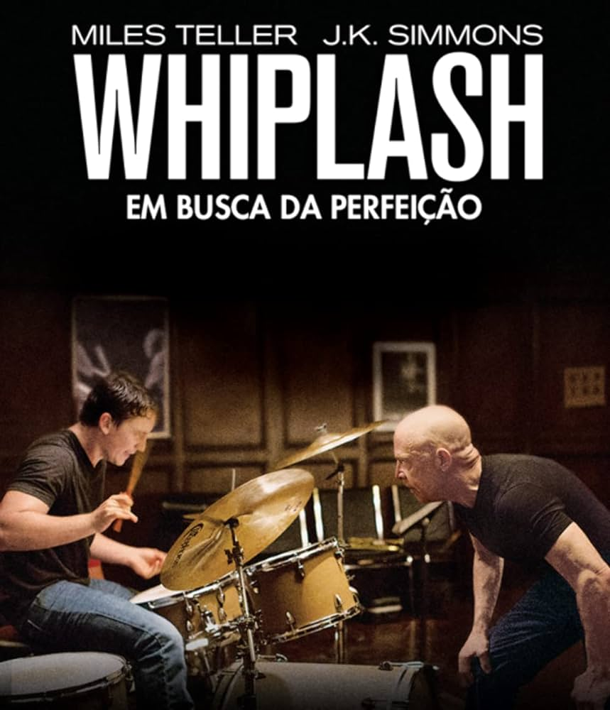

Esta é uma página em tributo ao diretor Damien Chazelle!
Feito por Luiz Eduardo Schmalz

Damien Chazelle é um aclamado diretor e roteirista americano, conhecido por sua habilidade em combinar música e narrativa de maneira impactante.
Nascido em 19 de janeiro de 1985, em Providence, Rhode Island, Chazelle se destacou rapidamente no cenário cinematográfico com sua visão única e talento precoce.
Ele se formou em cinema pela Harvard University, onde começou a desenvolver seu estilo característico.
Seu primeiro grande sucesso foi "Whiplash" (2014), seguido por "La La Land" (2016), filmes que solidificaram sua reputação como um dos diretores mais promissores de sua geração.

"La La Land" é um musical romântico que segue a história de Mia (Emma Stone), uma aspirante a atriz, e Sebastian (Ryan Gosling), um músico de jazz dedicado.
Ambientado em Los Angeles, o filme explora os desafios e sacrifícios que ambos enfrentam enquanto buscam realizar seus sonhos.
À medida que seus caminhos se cruzam e suas carreiras começam a decolar, Mia e Sebastian devem confrontar o custo de suas ambições e o impacto delas em seu relacionamento.
Com uma trilha sonora vibrante e coreografias deslumbrantes, "La La Land" é uma celebração nostálgica e moderna da arte e da paixão.
"A coisa mais importante na arte é inspirar uma conexão emocional."
-Damien Chazelle
"Whiplash" conta a história intensa de Andrew Neiman (Miles Teller), um jovem e talentoso baterista de jazz que estuda em uma das melhores escolas de música dos Estados Unidos.
Sob a tutela do impiedoso e exigente maestro Terence Fletcher (J.K. Simmons), Andrew enfrenta pressões extremas para alcançar a grandeza.
Fletcher utiliza métodos de ensino brutais e abusivos, empurrando Andrew ao limite de sua resistência física e mental.
O filme é um estudo sobre a busca pela perfeição, a determinação obsessiva e os sacrifícios pessoais que acompanham a ambição implacável.
